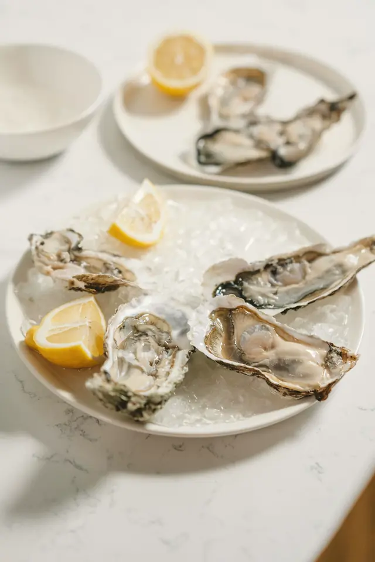
Pesce dell'Adriatico
Scampi, mazzancolle, ricciola e pesce azzurro dalle barche di zona. Il crudo si sceglie al banco, il pescato del giorno si cuoce intero.
Ristorante aperto tutto l'anno
Riva Bianca è uno stabilimento sul lungomare di Pescara. Trecento metri di sabbia chiara, ombrelloni in tela écru distanziati come una volta, una cucina che lavora solo il pescato dell'Adriatico e un forno a legna per la pizza a lunga lievitazione.
Dal 2001, ogni estate e anche d'inverno.
Numeri di esempio.
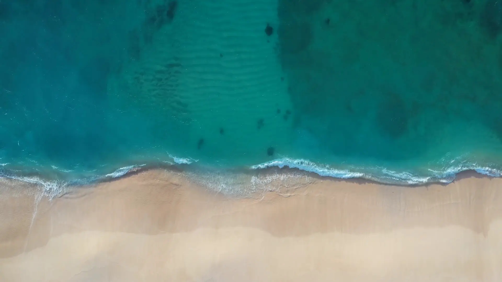
L'Adriatico davanti al lettino. Acqua bassa e chiara per i primi metri, ideale anche per i bambini.
Trecento metri di sabbia fine, file ordinate e quattro metri tra un ombrellone e l'altro.
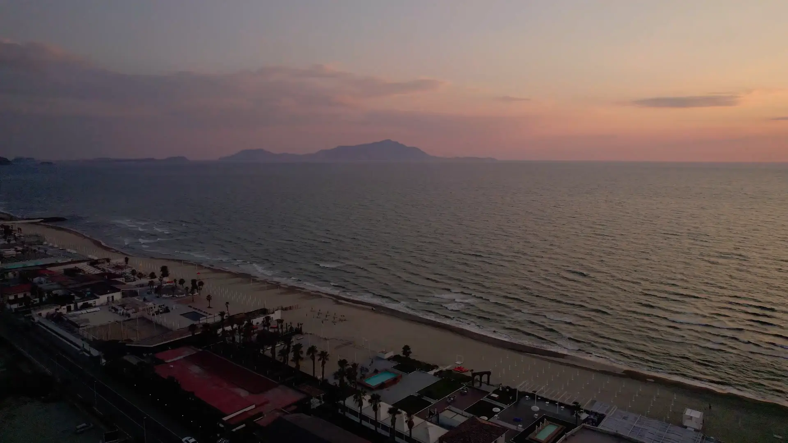
Centoventi coperti affacciati sulla riva: crudi a pranzo, cena a lume di candela.
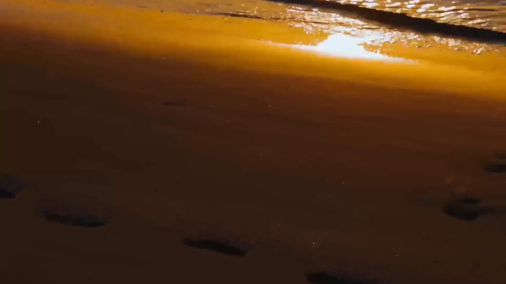
Il cielo si accende alle spalle della città e il mare diventa oro. È l'ora dell'aperitivo.
Ombrelloni in tela écru, lettini in teak e file larghe, perché in riva si viene per stare tranquilli. Il bar apre con il primo caffè e chiude con l'ultimo spritz.
La prima fila è a dieci passi dall'acqua.
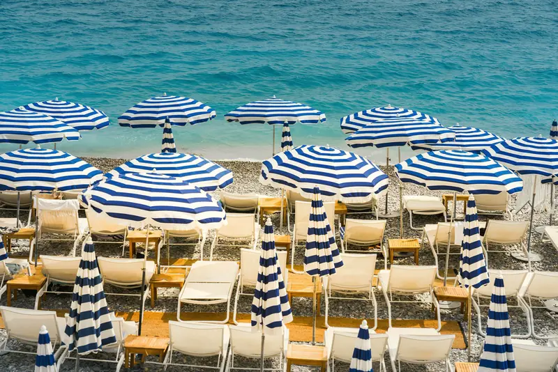
Ogni postazione ha un ombrellone, due lettini e un tavolino. Le prime file si prenotano anche a giornata, dalle seconde in poi trovi posto quasi sempre.
Listino di esempio. Prezzi per un ombrellone e due lettini, teli inclusi.
Scegli il giorno e il posto esatto sulla mappa della spiaggia: in prima fila, all'ombra di una palma o sotto un gazebo.
Ogni mattina il pescato arriva dal porto di Pescara e decide la carta del giorno. Pochi ingredienti, cotture brevi, nessuna salsa a coprire il mare.
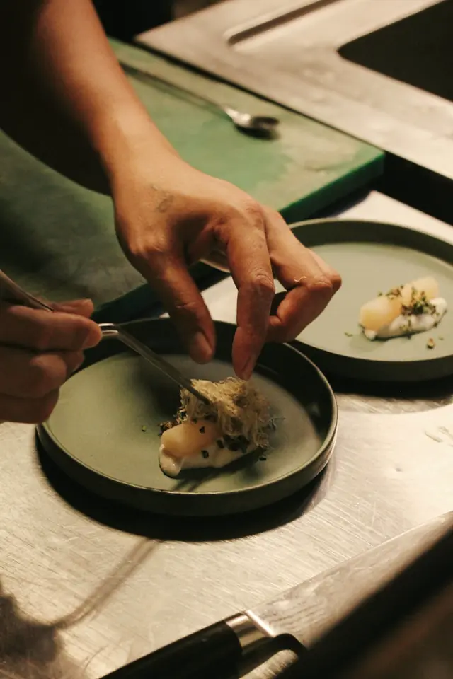
Lo chef
Cresciuto tra le barche del porto canale, ha lavorato in cucine stellate tra Marche e Liguria prima di tornare a casa. In carta trovi il brodetto di sua nonna, accanto ai crudi più puliti della costa.
Nome dello chef di esempio.

Scampi, mazzancolle, ricciola e pesce azzurro dalle barche di zona. Il crudo si sceglie al banco, il pescato del giorno si cuoce intero.
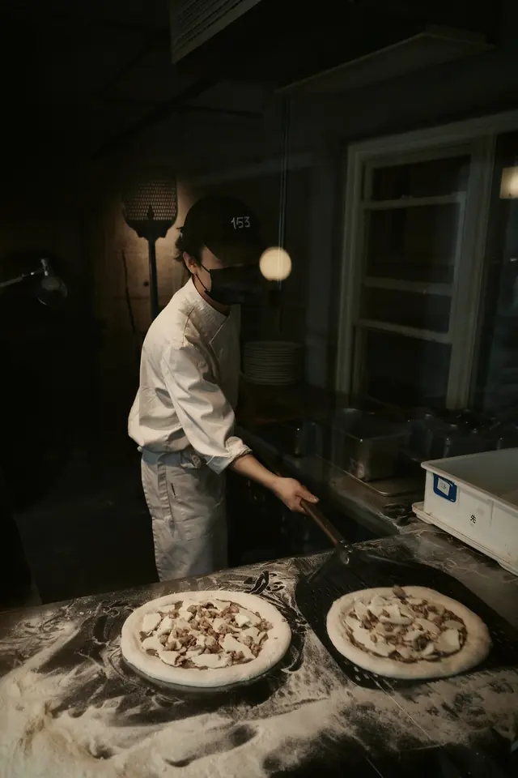
Lievito madre, farine macinate a pietra e 72 ore di maturazione. Cottura nel forno a legna, condimenti aggiunti anche a crudo.
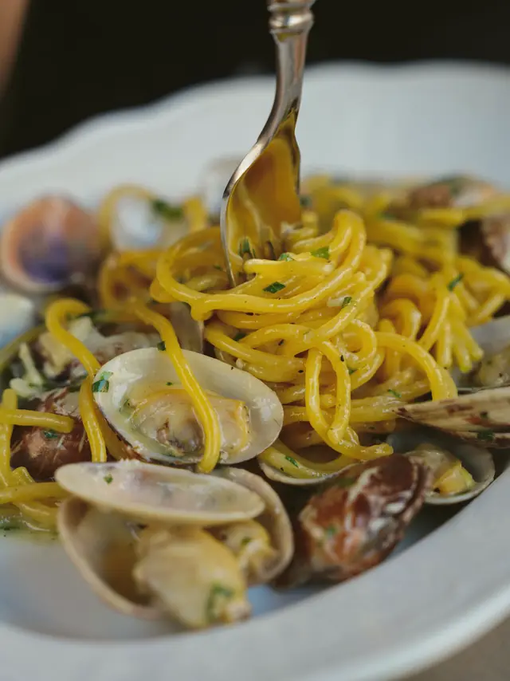
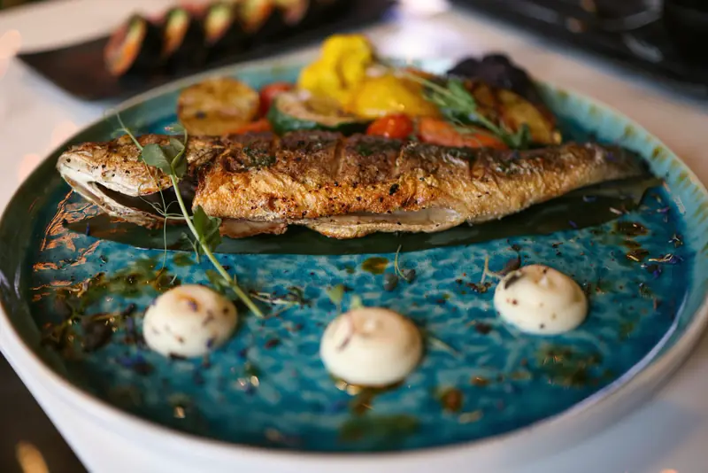
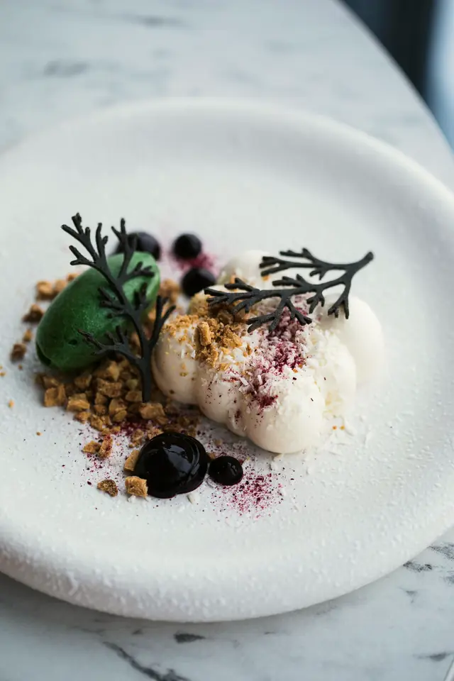
Tavoli in legno chiaro, tovaglie di lino e il rumore della risacca. A pranzo si sta all'ombra delle vele, la sera si accendono le candele.
Prenota in terrazza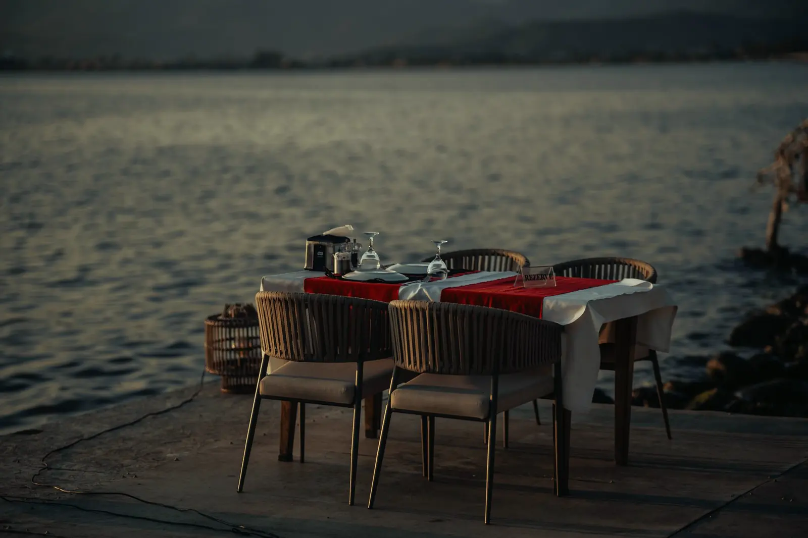
Matrimoni, lauree, cene aziendali e serate in musica. Spiaggia, terrazza e cucina sono vostre, dall'aperitivo all'ultimo ballo.
Programma di esempio. Il martedì siamo chiusi.
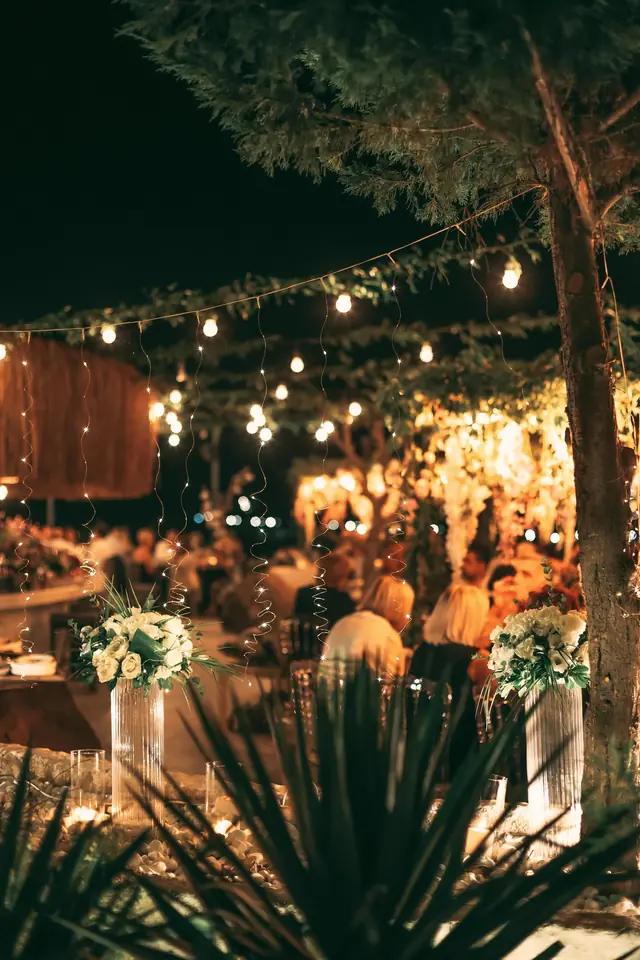
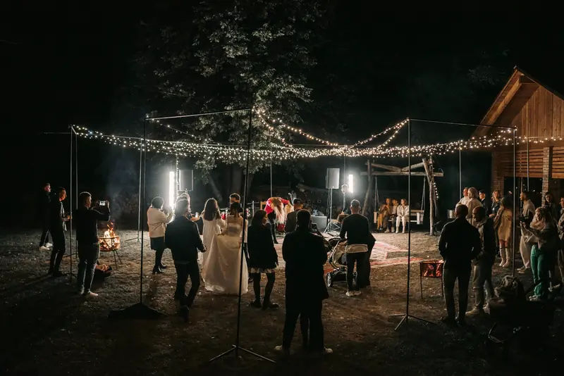
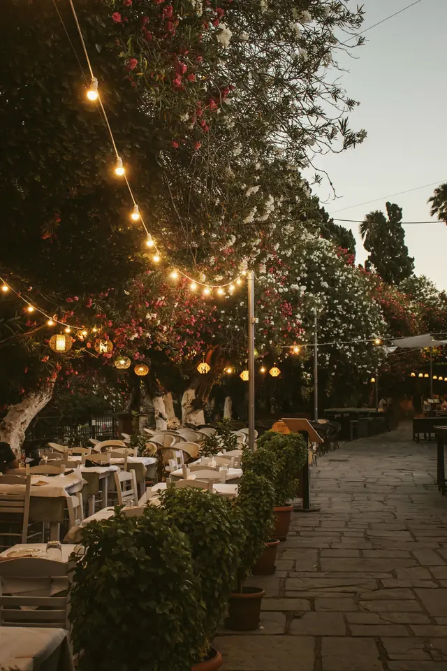
Raccontaci data, ospiti e idea. Ti proponiamo menù, allestimento e sopralluogo entro due giorni.
Una giornata a Riva Bianca, dal primo bagno all'ultimo calice.
La mappa di Google si carica solo se la chiedi, perché usa cookie di terze parti.
Cosa vuoi prenotare?
Un tavolo al ristorante